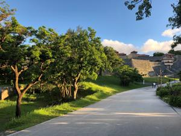
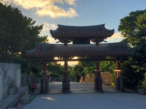

うるがいの話 ある日
最新: 枠に収めること
うるがいとは 前提知識です
カニの画像をクリックすると『うるがいの話』サイトを表示します
うるがい(ｳﾙｶﾞｲ urugai)とは、『もずくがに』の名前でとても大きくなります。
たながー（ﾀﾅｶﾞｰtanagaa）とは手長えびのことで、何種類かあり大きいのは車 エビぐらいになります。
ぶながー(bunagaa)とは、赤い髪の毛、赤い身体、そして身長は１ｍ２０ｃｍ ぐらい、川の蟹を食べているの目撃された。場所は沖縄県国頭郡大宜味村のと ある村僕の隣近所に住んでいる爺さんから、聞いた話です。
2021年09月20日 (月）
枠に収めること
16:46


分からん！、３日間悩んでいる。それは、プログの枠をパソコンとスマホで同
じ字ズラで枠内に収めたく、ＨＴＭＬの専門書を読みまくり、ネットを調べ・
・・・、今だに解決できず、悶々としている。それにしても、いい天気ですね
来年に期待しよう。